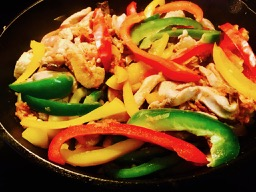

                                    <figure class="cards double">                                        
                                        <figcaption class="caption">
                                        
                                            <!--  Copy your recipie in here -->
                                            <h1><span style="color: #339966;"><strong>Chicken Fajita</strong></span></h1>
                                            <p><strong>Ingredients</strong></p>
                                            <ul>
                                            <li>Chicken breast 1 lb</li>
                                            <li>Bell Peppers (red green and yellow 1/2 of each)</li>
                                            <li>Mushrooms &frac12; lb</li>
                                            <li>Onion 1</li>
                                            <li>Salt as required</li>
                                            <li>Oil 1 tbsp</li>
                                            <li>Water 1 or 2 cups&nbsp;</li>
                                            </ul>
                                            <p><strong>Seasoning mix</strong>&nbsp;</p>
                                            <ul>
                                            <li>Paprika 1 tsp</li>
                                            <li>Cayenne pepper &frac12; tsp</li>
                                            <li>Onion powder 1 tsp</li>
                                            <li>Garlic powder 1 tsp</li>
                                            <li>Cumin powder 1 tsp</li>
                                            <li>Black pepper 1 tsp</li>
                                            <li>Lemon juice 2 tbsp</li>
                                            <li>Olive oil 1 tbsp&nbsp;</li>
                                            </ul>
                                            <p>In a bowl combine all the ingredients for seasoning mix.</p>
                                            <p>Cut chicken, bell peppers, mushrooms and onion into thin long strips.</p>
                                            <p>In a cast iron skillet add oil and stir fry the chicken. When chicken is almost cooked add onion, mushroom and salt. Keep stirring. Add the seasoning mix and toss to coat the chicken. Add required water and mix well. Cover and cook about 2 -3 minutes on low heat. Add bell peppers. Give it a final stir on high heat till chicken is almost dry but still moist.&nbsp;</p>
                                            <p>Serve with corn tortillas and toppings like lettuce, tomatoes and cheese.</p>
                                            <p>Can be eaten as taco filling or with rice as a side.</p>
                                            <p>&nbsp;</p>
                                            <p>&nbsp;</p>
